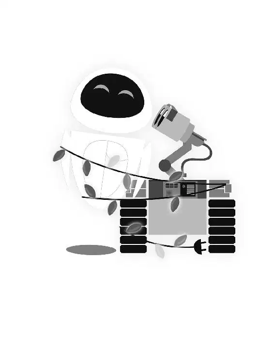

在船长的舱房里，一只圆胖的手举着一艘玩具星际飞船靠近一个全息影像地球仪。“准备降落。”船长边说边将“功理”号的小模型一寸寸地挪近地球仪。
“各位，我们到了！”他向他想象中的乘客们宣布道。他的手指在地球仪表面走了几步，然后他提高嗓门说道：“，船长！干得真漂亮！”
“不，没什么，”他又降低嗓音说道，“我很高兴做这些。都是为大家服务！”
奇怪的咔嗒声打断了他想象中的着陆。船长把视线从地球仪上移开，看见伊芙从垃圾滑槽里升了上来。
伊芙悬停在他面前，让他大为吃惊的是她打开了她胸前面板上的门。
“那株植物！”船长惊叫道，“你是怎么找到它的？”
伊芙向他飘近，敬了个礼。她把那株植物交给他。他盯着它，惊叹不已。“现在我们可以回家了！”他喘了口气说道。他看着全息影像地球仪。“它现在什么样？”他急切地问伊芙，“不，不，不用告诉我。”他边说边激活伊芙的记忆芯片，使她去地球执行指令时记录的各种影像浮现在了他的屏幕上。
在屏幕上的场景不断切换时，船长眯起了眼睛。他通过伊芙的眼睛看了她的地球之旅——所有她在地球期间看见并记录下来的东西。
但是船长的美丽期望很快便化为乌有。他看见了地球上糟糕的状况，眉头紧锁。这些照片和他之前在电脑上看见的截然不同。他开始担心。很明显地球的污染非常严重。他不能驾驶他的飞船回到那一堆垃圾中。人类将无法在那里生活。
他低头看着那株植物。有一片叶子掉落了下来。但是，等等——船长知道该怎么做了。他从电脑上学会了这个。他要给这株植物浇水。
他转身去浇水的时候，听到瓦力最喜欢的那首歌响起了。瓦力在地球上给伊芙看《你好，多莉！》的时候，她把它录下来了。
“嘿，我记得那首歌！”船长说。不知怎的，这首歌鼓舞了他。
他看着那株植物。如果这个小东西能够在地球上生长，那么他的乘客们也能在那里茁壮成长、蓬勃发展。天哪，他们甚至还可以帮着清洁那个星球，消灭污染！
伊芙的录像装置继续播放《你好，多莉！》时，她一直在看着。她看见瓦力最喜欢的演员们如何紧握着对方的手。她低头看着自己的手，把它们交握在一起。突然，她明白了瓦力一直努力想要做的事。他想要握她的手……就像他的电影中的那对浪漫恋人一样。
然后伊芙发现自己正在观看的是她在地球上休眠时的景象。她看见了她一直以来都不知道的事情——她休眠时瓦力照顾她的景象：瓦力用他的伞给她遮雨；瓦力尽力保护她，自己却被埋在沙暴中；她电源关闭时瓦力夜以继日地照看她。她甚至看见他试图用引线将她的电子心脏和他自己的跨接来启动它。
伊芙被瓦力的无私奉献所感动，她自言自语道：“瓦力。”终于，她意识到瓦力爱她！
